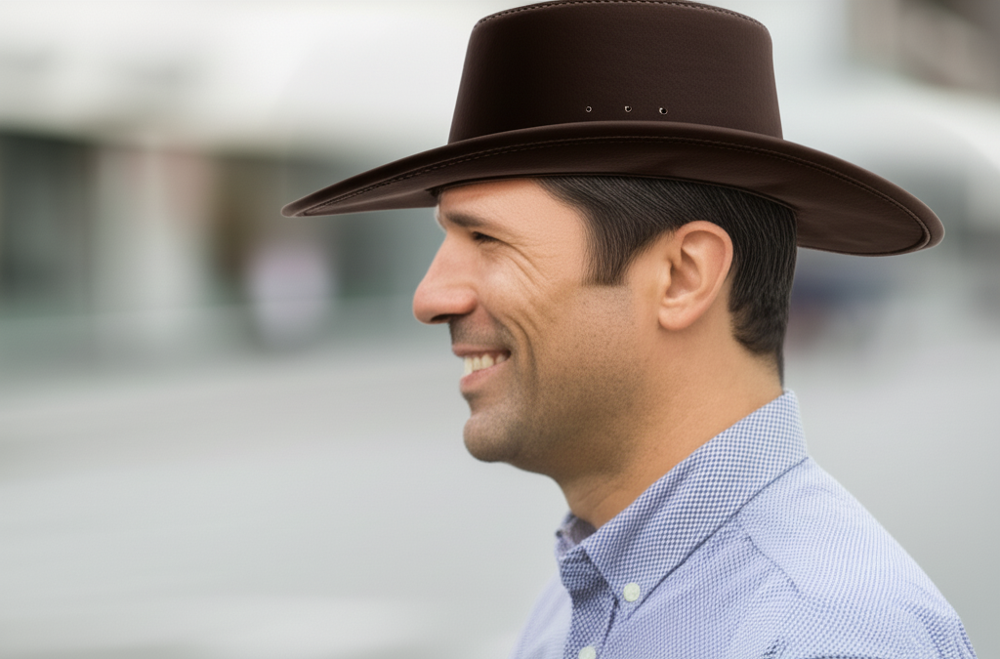

About
This post looks at how we can edit an image with Gemini and llm.rb. Our plan is to edit an image to be a little silly by adding a cowboy hat into the mix. The llm.rb library supports both image generation (with a prompt) and image editing (also done with a prompt) plus much more that we won't cover here. Let's get started 😃
Placeholder
We don't want to offend anybody or cross any red lines, so the first step we will take is to generate a placeholder image on the fly. This will allow us to follow up and edit the image by adding a cowboy hat as mentioned earlier. Let's generate a single image, and save it to use later:
#!/usr/bin/env ruby
require "llm"
llm = LLM.gemini(key: ENV["GEMINI_SECRET"])
res = llm.images.create(prompt: "A profile photo of a man, in his late 30s")
IO.copy_stream res.images[0], "photo.png"
Edit
The next step in the process is to edit the image we generated in
the last step. We will add a cowboy hat to the man in the photo,
which will likely be different for each person running these examples.
The edit method takes a path to a file, and also a prompt that
describes the edit that should be made:
#!/usr/bin/env ruby
require "llm"
llm = LLM.gemini(key: ENV["GEMINI_SECRET"])
res = llm.images.edit(image: "photo.png", prompt: "Add a cowboy hat")
IO.copy_stream res.images[0], "cowboy.png"
Result
